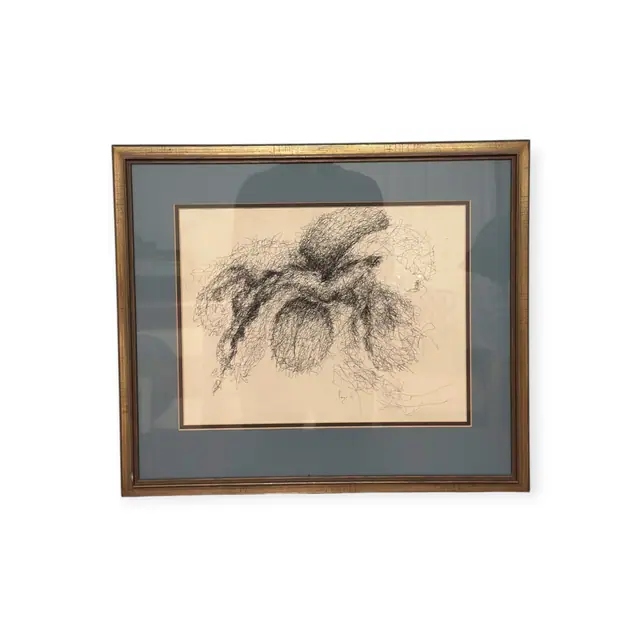
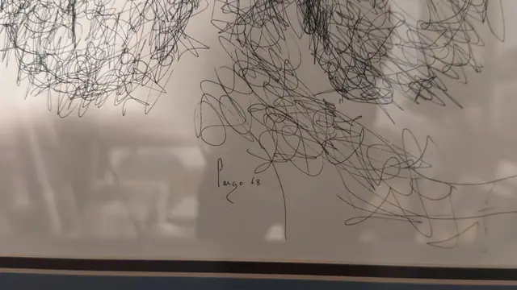
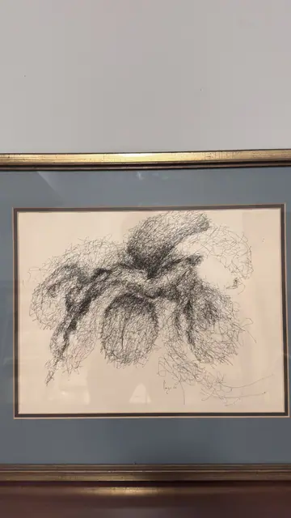

Paintings & Prints
Scribbled Ink Drawing of a Blossom, Signed, Framed, 1968
· dated 68 (1968)
Price Upon Request



About the Item
A single dense skein of pen line, drawn without lifting, coils into a form that reads as a great open flower or wind-blown tree: heavy dark knots at the centre spread into looser, airier tangles at the edges, with a few long loops escaping to the lower right. Pure black ink on a warm cream sheet, with no colour at all - the drama is entirely in the density of the line. Mounted on a slate-blue mat with a black core line inside a gilt frame under glass. Medium: pen and ink on paper. Signed lower centre of the sheet, in ink, reading "fargo 68". Inscribed on the reverse or mount: fargo 68 (ink, lower centre of the sheet). Condition: Sheet lightly toned; a faint horizontal line runs across the lower left; mat and glass clean apart from reflections.
Details
- Creation Year:
- dated 68 (1968)
- Dimensions:
- Height: 18.5 in (46.99 cm)
Width: 21.0 in (53.34 cm)
outside of frame - Medium:
- pen and ink on paper
- Period:
- 20Th
- Condition:
- Offered in the condition shown in the photographs.
- Reference Number:
- VO-137
- Documentation:
- no certificate photographed
- Gallery Location:
- fargo 68 (ink, lower centre of the sheet)